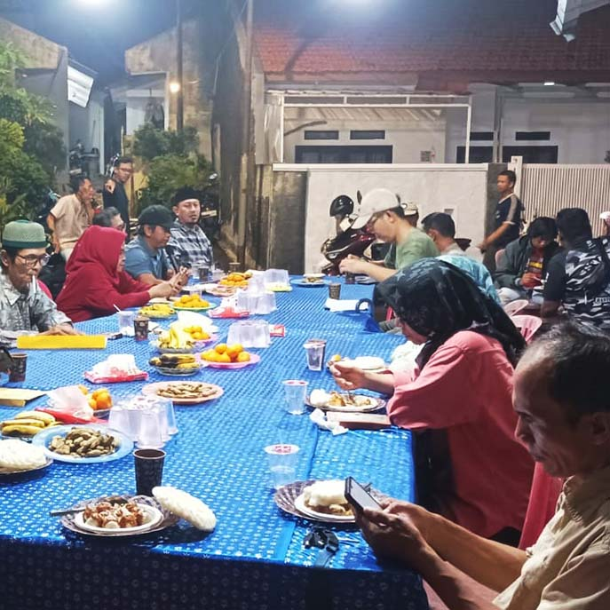

Tanggal, 12 Desember 2025
MediaKada | Kegiatan penyerahan Surat Keputusan (SK) Bank Sampah RW 08 Kelurahan Kelapa Dua dilaksanakan pada Jumat (12/12) malam. SK tersebut diserahkan langsung oleh Koordinator Bank Sampah Kelurahan Kelapa Dua, Lina, kepada Ketua Bank Sampah RW 08, H. Uus Agustino. Acara ini turut disaksikan oleh jajaran pengurus RT dan RW, FKDM-08, Babinsa, serta petugas keamanan RW 08.
Ketua RW 08, Bisri Ali berharap dengan telah terbitnya SK Bank Sampah RW 08 para pengurus bank sampah agar segera bekerja, dimulai dengan merekrut ibu-ibu kader RW 08 sebagai anggota.
Dengan diserahkannya SK dan terbentuknya susunan kepengurusan Bank Sampah RW 08, diharapkan pengelolaan bank sampah di lingkungan RW 08 dapat segera berjalan. Warga nantinya dapat menyetorkan sampah anorganik seperti botol minuman, kardus, dan lainnya ke Bank Sampah RW 08, sehingga memperoleh tambahan penghasilan dari hasil setoran tersebut.
Penyerahan SK ini dilaksanakan bersamaan dengan rapat koordinasi bulanan RW 08, yang rutin digelar sebagai wadah untuk membahas berbagai permasalahan serta merancang program-program yang akan dijalankan ke depannya. Kehadiran Bank Sampah RW 08 diharapkan menjadi langkah nyata dalam mendukung kebersihan lingkungan sekaligus meningkatkan kesejahteraan warga.
(LMK-08 Kelapa Dua)
Home